面向日语的 iOS 本地朗读工具。先建立文本、文件与阅读体验，再接入设备端语音。
参考四张原图的层级与阅读方式，统一为克制的蓝紫色视觉语言。
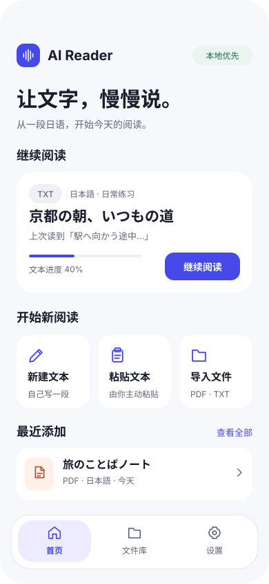
继续阅读优先；文件导入不经过服务端。
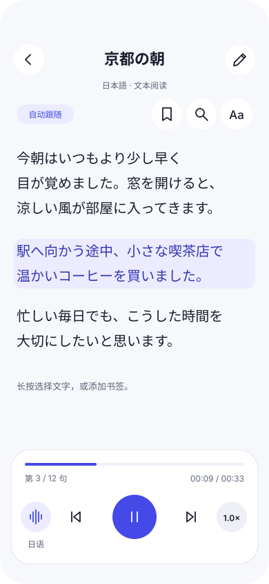
播放态示意；无引擎版本显示明确的未就绪状态。
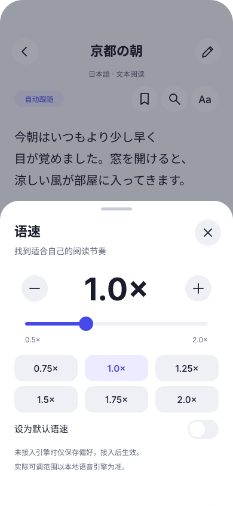
加减可代替滑动；M0 原生版本已支持保存偏好；此处为原始设计图。
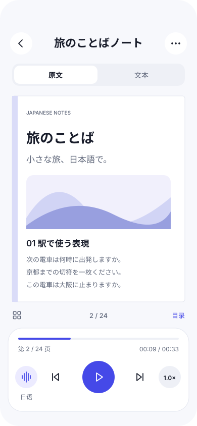
保留原文；提取文本与原页映射分层管理。
导入、保存、查找、管理、空态和资源缺失都有明确的下一步。
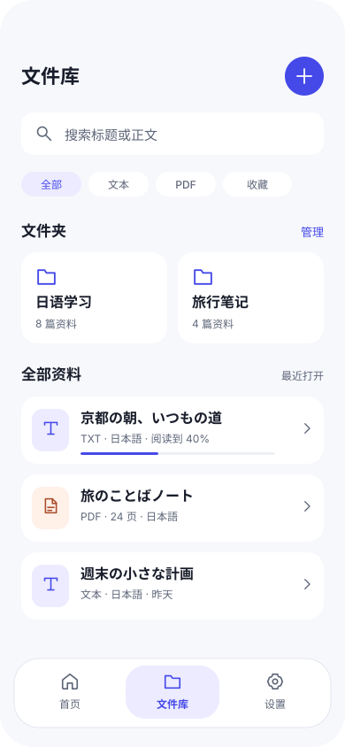
文件夹、收藏、搜索、排序与批量管理。
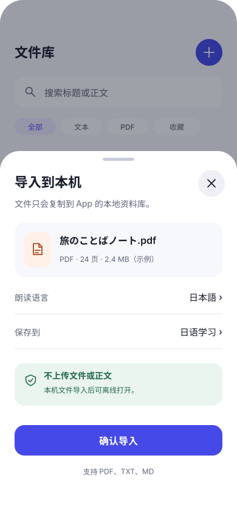
先确认，再复制与解析；失败按项恢复。
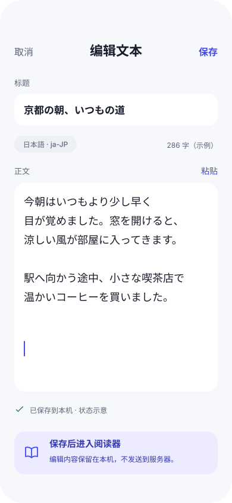
草稿自动保存；失败保留原输入。
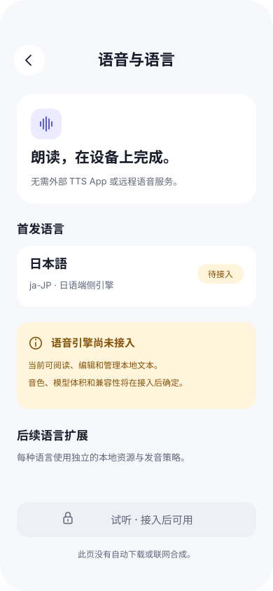
明确未接入；不制造已下载的模型和音色。
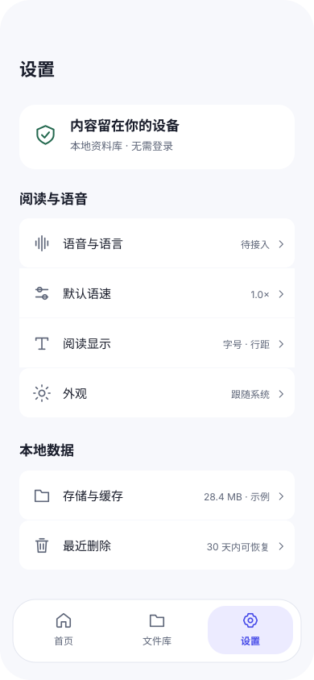
默认偏好、存储清理与可恢复删除。
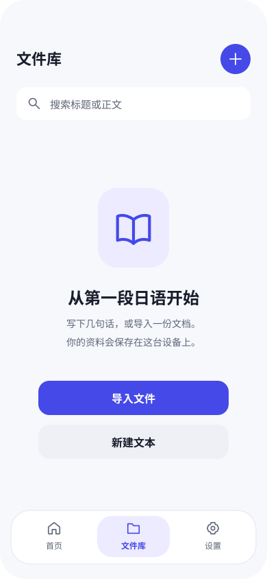
不展示虚假的用户资料；引导第一次创建。
浅色与深色分别定义语义颜色。原生动态字号与横屏行为以规格为准，需在实际工程验证。
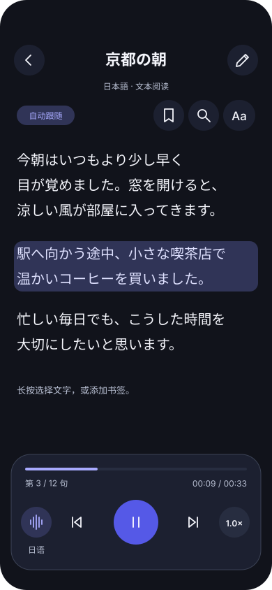